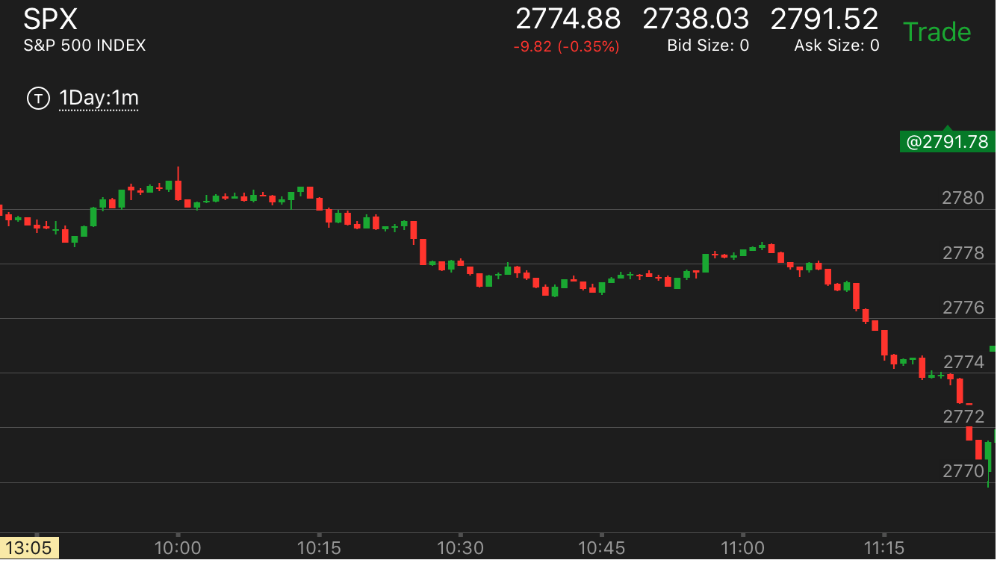
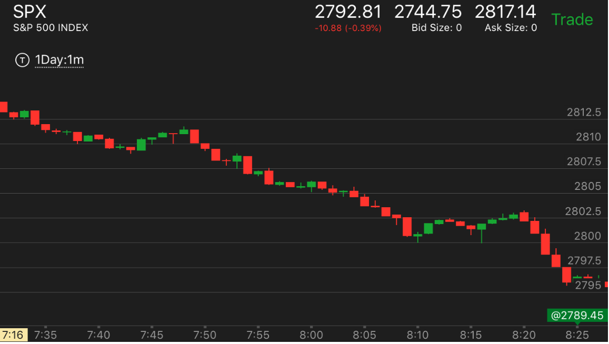
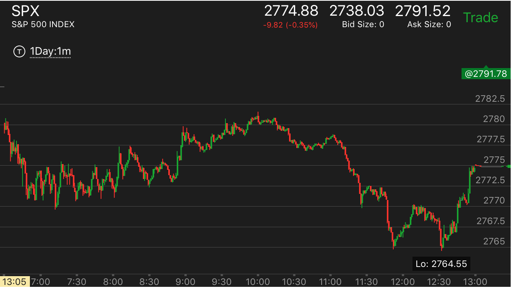
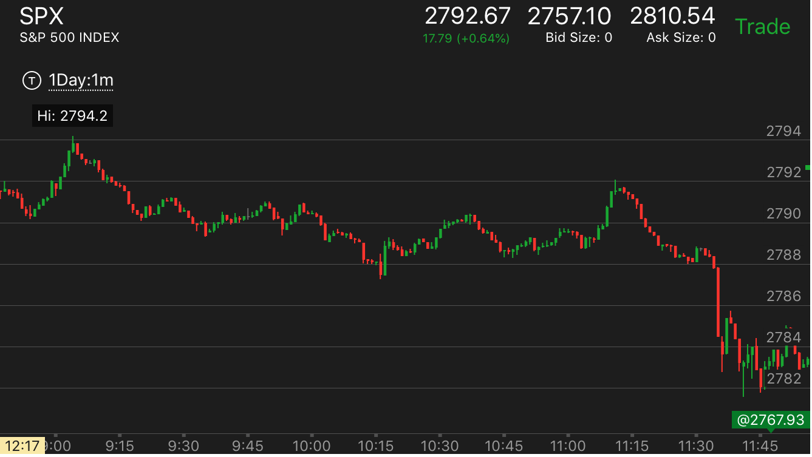
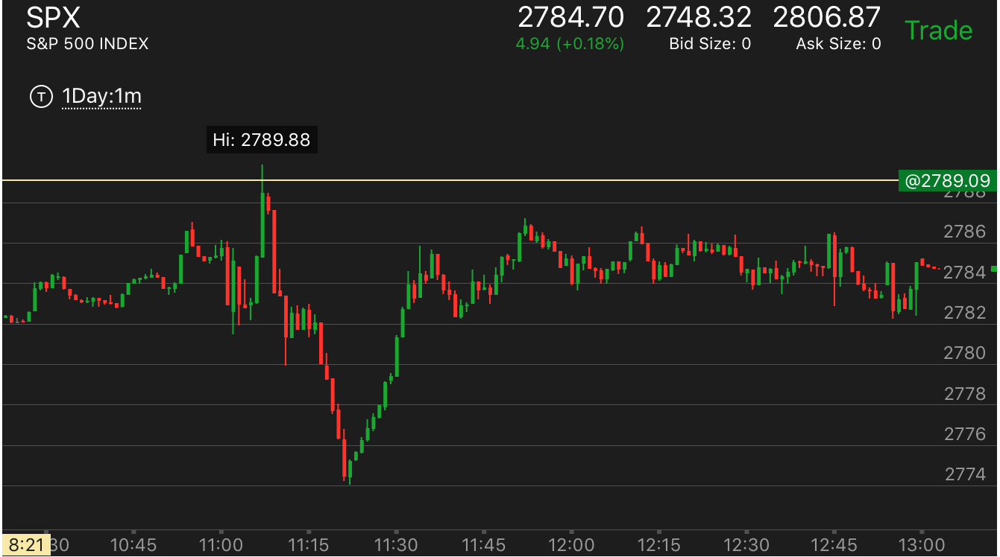
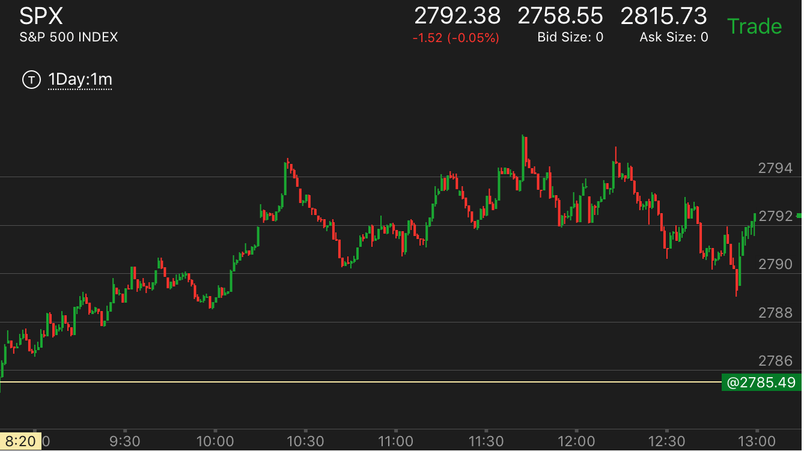
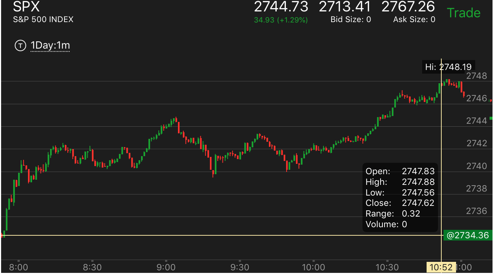
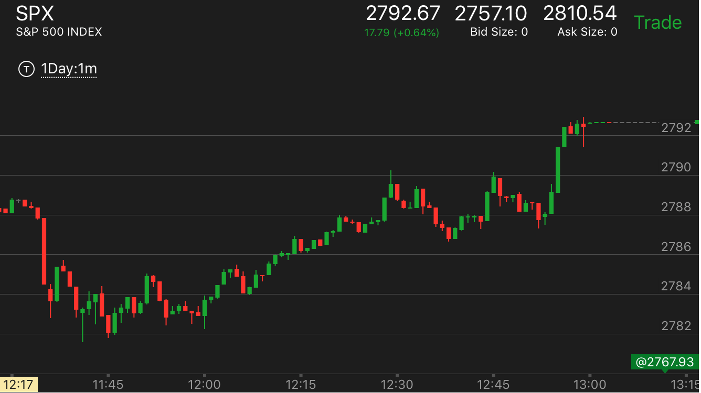

=====================================================================================
大势判断程序，跌势中是否转向
下跌的主要走势是否爆发，就是休息一段，然后再次暴跌
盘中出现新低
如果有反转走势，反转走势可以是，双底，两段下跌反转，两次跨越反转，是否产生第二段上涨
盘中是否有真空没有填
=====================================================================================
大势判断程序，升势中是否转向
升势的主要走势是否爆发，就是休息一段，然后再次大涨
盘中是否有真空没有填
上涨的过程中是否稳健
=====================================================================================
做空的时候，大盘不断上涨
前面的跌势是否有激烈的行为，比如加速，或者快速下跌
走势是否有回调后新高，或者各种稳健上涨的样子
在转折的地方，是否出现了双底或者走平
是否和直觉相反
=====================================================================================
不容易判断但是会出现巨额利润的走势，
走势形状
=====================================================================================
大盘处在上升期间
大盘处在下跌期间
大盘处在下跌期间
TOP
大盘出现快速下跌
不断从一个点反弹后，冲高，下来走平后破位
下跌期间出现回调
下跌期间碰到前面的低点，似乎形成了双底
开始下跌的时候，非常的缓慢，跌幅很小
下跌期间出现了临时的底部形状
大幅快速下跌后，很快反弹，到了比原来高点
低一些的地方
大盘处在上升期间
TOP
上升期间发生的样子
上升期间出现M形状的走平
上升期间一次性回调幅度很大，反弹的时候速度很慢
上升期间不断冲高后拉回
上升期间发生震荡或者走平期间，发生较大幅度冲高后，很快拉回
上升期间发生长时间震荡
上升期间发生小幅台阶的走势
上升期间出现垃圾走势
上涨期间碰到阻力点，后退破位
上升的结束和转折
出现顶部形状后，又出现底部形状
上升期间发生两次跨越，第一次慢，第二次快
上升休息后，出现长时间的缓慢上涨
上升休息后，出现快速大幅上涨
上升期间，出现了跨越上涨，缓慢下跌。到达头部
大幅快速下跌后，很快反弹，到了比原来高点低一些的地方
TOP
这种时候是做空的好机会。
一个主要走势是跌势的走势，反弹的时候速度很快。而且反弹的幅度很大。很短时间就反弹到了和原来位置差不多的地方

图示：11:30很快反弹，看它的幅度，很快就反弹到了只比开始下跌的地方底两个点，然后长时间震荡，而且在底部反弹很快。
说明仍然处于跌势。

图示：8：00立刻反弹，反弹幅度很快到了比原来高点低两个点的地方，说明还是要跌的。而且会破前面的低点。
而9：00下跌的时候，则非常缓慢，在底部停留很久。这样才是要涨的走势。所以不用去着急试图超最低点，而是要做空。做空有充足的时间。
也说明主要走势是跌势。

图示：8：00加速下跌后，开始反弹，虽然反弹开始比较慢，但是后来还是比较弱的。一直反弹到了和原来高点差不多的地方，开始缓慢走低。
说明要跌。下跌后，分别在9：40以及10：20快速反弹，说明主要走势是下跌，不要去超底，而是等它反弹后做空。在11：20和12：00它在底部时间很长，
可以做多反弹。
下跌期间出现了临时的底部形状
TOP
出现了临时的底部，会反弹后，再次大跌。

图示：大盘处于跌势中，11：30大跌后，走平，，反弹很小。这样的走势一定会反弹的。这就出现了一个临时的底部。
可以放心做多。直到前面的真空被填后，继续大跌。
开始下跌的时候，非常的缓慢，跌幅很小
TOP
从高点开始下跌，很慢，回调后，发现跌幅很小。这样会大跌。

图示：10：15开始下跌。可以看到它跌幅很小。11：00回调后，发现它其实只跌了两个点，一个多小时的时间。
这时反而是应该做空的好时机。它会大跌的。
开始下跌的时候，跌幅很小，跌两个点就走平，显得好像跌不下去。

图示：7：50开始下跌的时候，跌幅很小，而且不断走平，到了8：10
还开始反弹，8：20的反弹还出现了更高峰。结果大跌。要想到前面的不断走平下跌，跌幅必然很大。不会
轻易的反转的。

图示：7：30开始下跌的时候，跌幅很小。非常缓慢。一旦下跌，它会是很强的跌势。
不一定会填补真空。
7：50从最高的大跌了15个点，但是没有任何反弹，就走平，缓慢走低，然后继续大跌。
这个说明，不要做反弹，抄底的走势。它跌破的了前面的低点，而且刚刚低不多。它也不需要回调了。而且从一个冲高大跌的走势下来，比较强。
下跌期间碰到前面的低点，似乎形成了双底
TOP
关键在于，它的形状，如果立刻反弹后，走平很久。那么很可能跌破低点。

图示：7：10有个低点。大盘大跌后，11：20碰到低点，立刻反弹。似乎很强。它在2772走平很久。再次下来后，跌破
低点后，跨越下跌。所以不要看到似乎是双底，就在下面接着。而是要等它确认双底再说。特别是这种反弹后，走平很久的走势。如果是第一次，
很可能跌破。而第二次则反弹。
下跌期间出现回调
TOP
下跌幅度很大，回调也很大。

图示：6:40在底部停留时机不长，就开始反弹，它的反弹速度很慢，
似乎很强的样子。但是它很快就反弹到了比高点低两个点的地方，反弹幅度比较大，
然后长时间的走平。这样，就应该做空了。
刚刚开始下跌的时候，幅度很小，就开始回调，很容易让人觉得它要继续涨，要主要观察。它
走平的时候，是倾斜向上的，虽然幅度很小。那是因为下跌的幅度就很小。

图示：7：40下跌，走平，然后开始反弹，让人觉得它要继续涨了。因为前面的惯性。
7：40下跌后，再次反弹，一开始看起来是走平，其实仔细观察是在斜着向上。这个走势很容易让人被前面的强势上涨所影响，而去做多。
大盘出现快速下跌
TOP
快速下跌前发生的事情
如果前面上涨很久，出现了顶部后，快速下跌。
如果前面冲高后，在高位长时间震荡，然后快速下跌
如果前面从一个底部上涨，然后快速回到这个底部附近
1. 如果立刻反弹，幅度比较大，反弹到了前面的阻力点。可以做空。
2. 如果走平，如果是走平后下跌，走平时间只要4分钟，而不是刚刚跨越点，而且跌幅比较大,反弹可能很大,反弹前可能创新低，但是也可能只稍微低一下就直接反弹
3. 如果立刻反弹，但是反弹幅度很小，再次下来，可能是双底反弹，如果双底反弹，很快就幅度很大，那么会继续跌。如果双底反弹稍微反弹一下，就开始走平，那么会大涨
4. 如果立刻反弹，反弹幅度不大，然后开始走平很久。走平的位置是前面的阻力点。那么可能走平后继续大跌
5. 如果反弹的位置比前面的低点不是低很多，那么大盘可能处于升势。如果低很多，那么大盘处于跌势。
6. 如果在升势出现这样的下跌，那么跌倒前面的支撑点，走平或者震荡几分钟，会大涨，创新高。
7. 如果在升势，前面出现双顶，这样的快速下跌，会突破双顶。它会跌破原来的震荡低点，停留在更早的支撑点，走平几分钟，然后大涨
8. 如果出现立刻反弹，再次创新低，那么最后的低点会是一段长长的加速下跌，
9. 如果是刚刚开盘出现，如果前面有走平几分钟，那么这个快速下跌，一旦走平4分钟，可以做多。
10.
上升期间，出现了跨越上涨。缓慢下跌。到达头部
TOP
出现较大幅度的跨越走势，容易认为是要继续涨。但是如果跨越走势没有填补真空，
而且在底部停留很短时间。那么就不对。应该观望或者做空。

图示：9：00开始第一段下跌。然后震荡后，再次下跌。10：15反弹。第一段上涨。11：10开始上涨。速度很快。跨越上涨。让人觉得很强。
结果就是第二段上涨了。后面的下跌非常的缓慢。这个就是顶部了。
上升休息后，出现快速大幅上涨
TOP

图示：11:00宣布利率后，大盘波动。它已经上涨了一段时间，11：00后，震荡几分钟，突然大涨。
它一旦停止，就可以立刻做空。这个一定要确认它是第一段升势结束。而不是第一段刚刚开始。
上升休息后，出现长时间的缓慢上涨
TOP

图示：
1. 不断小步上涨后，7：50转折，可以看到它转折的时候，没有加速上涨，而是很平缓，说明这个只是休息，没有到达顶部。它
回调后，8：40恢复上涨。虽然仍然很缓慢。但是它持续不断的上涨。实际是一个加速走势。
2. 它的真空是在2695附近。也就是前面回调的地方。不是前面小步台阶的地方。

图示：10：30开始，它出现长时间的缓慢上涨。这就是顶部了。它又是第二段上涨。说明升势结束了。
上升期间发生两次跨越，第一次慢，第二次快
TOP
上涨或者下跌的时候，回测关键点的时候，时间很长，这样就意味着未来会两次跨越，到达转折点。
但是这个走势也要具体分析，第二次跨越本身要加速上涨，才会反转，而且如果总的走势不大，那么反转后跌幅也很有限。
所以不能看到似乎有这个走势，就不顾一切的反向操作，而是要仔细观察。如果上涨很快，反转后也很快，那么反转会很大，也会反转，
如果很慢，可能不反转，或者非常有限的反转，就立刻拉回了。

图示：11：30开始上涨，然后回测前面的低点，用了很长时间，再次跨越后，12：10回调一些，再次跨越，
这样就到达顶部了。应该充分利用。

图示：11：25到11；45回测关键点，时间很长。它后来开始跨越。但是这个跨越第一次没有直接越过前面
高点，然后回调，然后再次跨越。这样也可以算是一次加速，所以不要拘泥于一种形式。
出现顶部形状后，又出现底部形状
TOP
从顶部下跌太快，然后反弹很小，这样反而成了一个底部，最后创新高后，形成垃圾走势

图示：：10：00出现了加速上涨走势，然后在10：20出现了顶部的形状，缓慢下跌。结果它下跌速度很快。
一下就跌了4个点。反弹却很小，在底部走平很久。这样反而成了一个升势走势。果然它后面创新高，然后很快下来。这样变得不上不下的，成为垃圾走势
上涨期间碰到阻力点，后退破位
TOP
盘中出现阻力点，后退破位：第一个阻力点常常是走平的，而第二个阻力点是尖的，它通常震荡，
震荡中间出现新低，然后反弹，碰到阻力点立刻下来。另外前面有没有填补的真空。这样它会迅速下跌。跌破震荡范围，
到了前面的低点后，出现一个底部的走势，然后大涨，突破低点。

图示：
1. 10：30出现比原来加速下跌更低的点，立刻反弹。碰到2703，走平，然后下来。
11：58分再次下来，被阻力点堵住。它开始大跌。而前面有个空没有填。这个大跌正好填补这个空。它在底部走平4分钟。
开始缓慢上涨，然后一举突破阻力点后，大涨。
2. 12：20开始上涨时候，也是小步台阶上涨走势。要记住这个不是走平后上涨走势。
上升期间出现垃圾走势
TOP
图示：11:20出现了反弹，幅度很大。高位一直震荡。但是一直没有大幅拉回。也没有快速冲高见顶。这样就不会有任何动作。最后大盘成为垃圾走势。
这样的走势应该不动。一直观察，不要做。
上升期间发生小幅台阶的走势
TOP
上涨期间不断出现，冲高走平，再次冲高，每次冲高的幅度也不大，但是它的走平时间很短，所以不能是两段走势

图示：10:45经过一个转折后，它开始上涨，它一直上涨很缓慢，中间不断的走平。但是也不代表要回调。所以不是说上涨后走平就是回调了。
这个很难说。如果一开始上涨的很缓慢，而走势本身很强，那么后面就是走平也会不断上涨的。这个走势的开始上涨非常的慢，10分钟才涨了2个点。这个本身就是一种强势的表现。
小步台阶上涨走势：每次涨幅不大，走平时间很短，估计只有5，6分钟。这个不会产生真空。
不要以为它会填这个真空。要注意和走平后上涨走势区分，
也要和5浪走势区分。5浪走势每个台阶是比较大的。

图示：6：50开始，小步上涨，可以看到它每次涨幅很小。走平时间很短。所以即使不会调，
也没有关系。这个不是真空走势，这样走法，真空已经填补了。它的真空发生在2695附近。远远高于起始点，所以不要以为它一定会下来。
上升期间发生长时间震荡
TOP
升势中距离低点不远发生长时间震荡。震荡点会成为支撑点。

图示：从8：20到9：50一直在2620到2622之间震荡，说明大盘要涨。而且看看它前面的低点。距离很近。底部在2614，前面支撑点
在2618.距离非常近。说明它一旦突破一定会继续涨的。它先大跌，回头探测2618，然后大涨一举突破前面的震荡点。但是刚刚突破，就开始回头。
虽然它在高点走平，似乎是个下跌的样子。它的低点在震荡点以上。说明会继续涨。所以这个时候不要被它在高点走平所欺骗，以为这个会大跌。
上升期间发生震荡或者走平期间，发生较大幅度冲高后，很快拉回
TOP
大盘处于升势，然后震荡。它大幅上涨后，高点停留很短，就拉回到震荡点。这样未来一定会超过这个点的。应该立刻做多。
甚至可以加倍做多。

图示：前面大涨后，大盘处于升势，8：40大涨，在高点停留时间很短，就立刻下来。回到支撑点。
可以想到。再升势下，这个一定会超过高点的。可以做多。甚至加倍做多。
上升期间不断冲高后拉回
TOP
刚刚冲高一下，在高点停留很短，就拉回，然而总的趋势则是不断走高。这样的走势会爆发。
这个其实有些象M走平方式，但是这个是更加长期的M走势，M走势是两次，它是连续不断的。
应该买期权以加强利润。如果在收盘前没有爆发，更应该买期权。这样期权最便宜。

图示：10：55冲高后，立刻拉回。11：00冲高，后，在高点走平，似乎不是这个走势。
但是要看到，它冲高幅度很小。再次下来后，它的回调比前面回调高，所以也是一个冲高拉回走势，虽然它的顶部是平坦的。
上升期间一次性回调幅度很大，反弹的时候速度很慢
TOP
不断升高后，出现了小幅冲高后，走平的走势，没有回调。一个正常的升势，应该冲高后，回调很大。

图示：9：00出现大幅回调，然后上涨却很慢，上涨一点就开始走平。这个表示会持续上涨。

图示：
1. 8：20出现较大的下跌。8：35开始反弹的时候，却很慢。这样会持续上涨，冲破原来的高点。
2. 9:15到9：25走出一個小的5浪走勢，然後它的頂部不是平的，而是緩慢向下的。
這個走勢本身有點像冲高后快速大幅回調。但是仔細看，它回頭幅度還是太小了。所以是個頭部。會下跌。9:35分回调，回到比高点只低2个点的位置后，走平。
这个会大跌。所以即使错过前面的下跌，这个应该做。这个跌幅会更大。

图示：11：45冲高后，每次都回调很大。直到12：15。回调很小，在高点走平。然后走低。走低才一个点。就开始走平。
几分钟。这个说明走低幅度很小。会大跌。应该紧紧拿着它。它大跌后，12：35反弹。看看它的幅度。它仍然比最高的低两个点不到。更加说明它要大跌。最后它跌幅很大。
这种走势，应该紧紧拿住，它每次反弹，都要忍住不要卖，虽然很难受。这是一个典型的逐渐增强的跌势。
冲高，新高后，回调只有前面的一半。

图示：10:15冲高后，回调比较大，而10：40冲高后，回调幅度很小，
就开始走平。这样就是要大跌的标志。
上涨在顶部停留时间很短，和上涨的时间不成比例。这样就不是顶部，还会继续上涨。

图示：12：30和12：45出现两个顶部。12：30似乎是个双顶。但是它的时间很短。和前面长时间的上涨不成比例。所以一定不是顶部。后面还会继续上涨。
如果前面从一个底部上涨，然后快速回到这个底部附近
TOP

图示： 11:45和12：10出现双底后，大涨，然后走平很久。12：40再次回到原点。然后大涨。
如果前面冲高后，在高位长时间震荡，然后快速下跌
TOP
这样的走势，如果出现快速下跌，不能做多，而是要做空。它在高位震荡很久，是积累很多的动能的。即使快速下跌也可以维持很久。
上涨很久，出现顶部后，快速下跌
TOP

图示： 8：05开始快速下跌。它的前面出现了走平后上涨的走势，这个是个加速走势。说明到了顶部，
而前面上涨很久。这样即使快速下跌后走平，也不能去捞底。而是要设法做空。
不断从一个点反弹后，冲高，下来走平后破位
TOP

图示：
不断在2663反弹。然后下来，10：15在2664停下来，走平。一下跌破这个点数，
然后走平很久后。大跌
上升期间出现M形状的走平
TOP

图示： 7:45到7：55 出现M形状的走平。这样的走平表示会继续上涨。不是要到顶的标志。